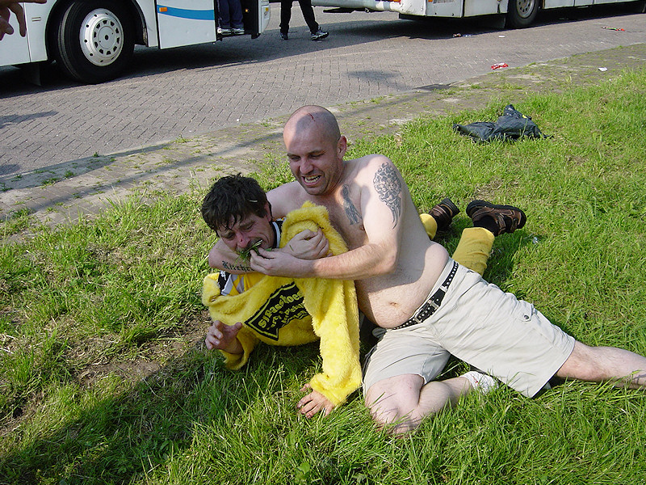

|
Feyenoord - Roda JC (3-1) 29 mei 2003 |
Midden-Limburgse supporters verzamelen zich op het "Ei".
FP-bus 3.
Pauze
Trots van het zuiden!
630 mensen mee on tour vandaag !!
Een echte hemelvaartsdag: warm!
Jalalalaaaa
Het uitvak was bomvol.
1-0
Ai 2-0.
Ondertussen is het 2-1 geworden door een
goal van Cristiano.
Spannend.
Vervelend uitzicht.

Grootste stadion, kleinste catering......
Game over...
Daar komt de Alfa-hulp.
Alweer pauze.

Another one bites the dust....
Klote-uitslagen, maar een leuke busreis.